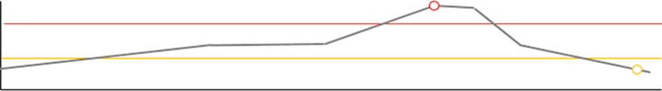

General
| VNF Instance Name | MSS1 |
|---|---|
| NS Name | HD Voice |
| Version | 2.0.0 |
|---|---|
| Vender | Telcoware |
| Flavor | Gold |
|---|---|
| Create Time | 2015-03-24 13:00:11 |
| State | In-Service |
|---|---|
| Auto-Scale Mode | Enabled |
Assurance Parameter
| 파라메타 | 설정 값 | 현재 값 |
|---|---|---|
| Session | 1,000,000 | 800,000 (80%) |
| Transaction | 5,000 | 270,000 (55%) |
Auto Scale > CSCM
Scale-Out :
or
Scale-In :
and
CPU_LOAD

MEM_USAGE
Topology
router
router
router
router
TEXTERMINAL NETWORK
TEXTERMINAL NETWORK
TEXTERMINAL NETWORK
ABC
TAS
LBCM
LBCM1A
LBCM1B
CRCM
CRCM1A
CRCM1B
CSCM
COM1
COM2
COM3
COM4
COM5
COM6
EMS
HSS
| 발생시각 | 시스템 유형 | 시스템 | 서브 시스템 | 알람 등급 | 알람 분류 | 알람 내역 | |
|---|---|---|---|---|---|---|---|
| 2015/02/24 13:00:12 | VNF | VIM1A | CRCM1A |
CRITICAL
|
DB Fault | Telcobase replication status abnormal alarm. | |
| 2015/02/24 13:00:12 | NFVI | VIM1A | CRCM1A |
MAJOR
|
CPU Overload | System CPU load critical alarm (95%) | |
| 2015/02/24 13:00:12 | NFVI | VIM1A | - |
MINOR
|
CPU Overload | System CPU load critical alarm (95%) | |
| 2015/02/24 13:00:12 | NFVI | VIM1A | - |
MINOR
|
CPU Overload | System CPU load critical alarm (95%) | |
| 2015/02/24 13:00:12 | VNF | VIM1A | - |
CRITICAL
|
DB Fault | Telcobase replication status abnormal alarm. |
|
|
발생시각 | 시스템 유형 | 시스템 | 서브 시스템 | 이벤트 | 진행 상태 | 실패 사유 | 비고 |
|---|---|---|---|---|---|---|---|---|
|
|
2015/02/24 13:00:12 | NFVI | VIM1A | CRCM1A | ha::switchover | DB Fault | - | |
|
|
2015/02/24 13:00:12 | NFVI | VIM1A | - | ha::switchover | DB Fault | - | |
|
|
2015/02/24 13:00:12 | NFVI | VIM1A | - | ha::switchover | DB Fault | - | |
|
|
2015/02/24 13:00:12 | NFVI | VIM1A | CRCM1A | ha::switchover | DB Fault | - | |
|
|
2015/02/24 13:00:12 | NFVI | VIM1A | - | ha::switchover | DB Fault | - |
VNF Instance List
| No | VNF Instance Name | Network Service Name | Create Time | Flavor | State |
|---|---|---|---|---|---|
| 1 | MSS1 | HD_Voice | 2015/02/24 13:00:12 | Gold | |
| 1 | MSS1 | HD_Voice | 2015/02/24 13:00:12 | Gold |